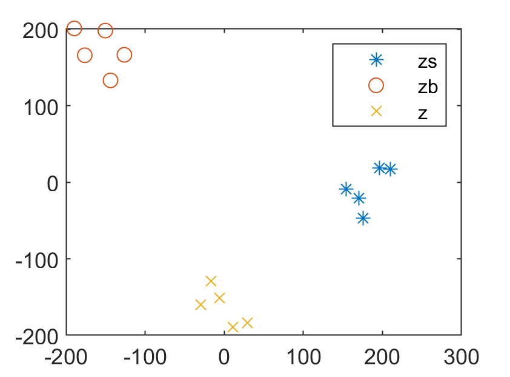
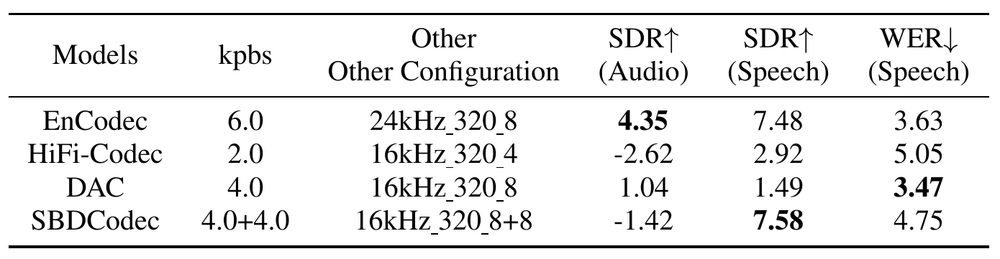
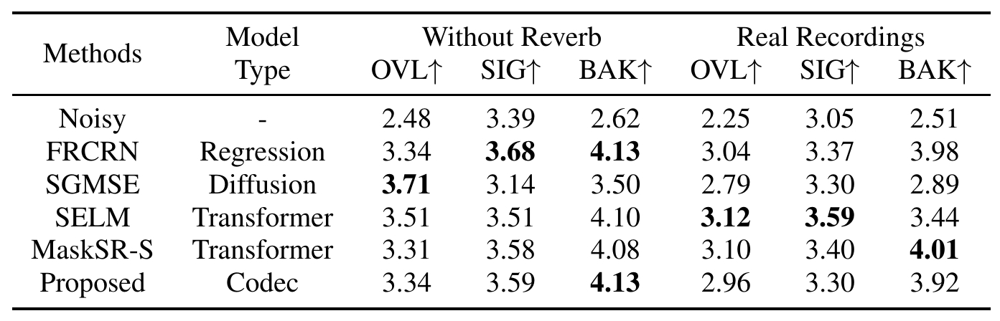

unifying various audio tasks into a generic framework for processing multiple audio tasks has become a trend. However, different audio tasks focus on features derived from distinct audio components. Therefore, this paper proposes SBDCodec, a codec method that decouples speech and background-sound tokens during the tokenization of input audio, enabling downstream audio tasks to explicitly select efficient input tokens. To achieve complete decoupling, we design a dual-path quantization block inserted into an encoder-decoder network for the independent vector quantization of speech and background sound. Moreover, we propose a token swapping training method, which replaces the background-sound tokens of the input audio and supervises the SBDCodec to reconstruct the input speech with the replaced background-sound. Moreover, we implement the SBDCodec on speech denoising and background-sound replacement tasks.
Figure 1. The overview of the proposed SBDCodec and its adapted speech denoising and background sound replacing models.
| (a) | (b) | (c) | (d) | (e) |
|---|
| (f) | (g) | (h) | (i) | (j) |
|---|
Figure 2. Demos of speech processed by SBDCodec and the related downstream tasks.
(a) Init y11. (b) Reconstructed y11 by SBDCodec. (c) Decode with zs1+zb2. (d) SD with zs1 (e) BGSR with zs1 and "A dog barks quickly" prompt.
(f) Init y22 (clean speech). (g) Reconstructed y22 by SBDCodec. (h) Decode with zs2+zb1. (i) SD with zs2. (j) BGSR with zs2 and "A person whisting" prompt.
|  |  |  |
| Figure 3. Visualization of speech, background-sound and the composite audio quantized representations. | Table 1. Reconstruction quality evaluation of codecs based on Codec-SUPERB. Best results are highlighted in bold. | Table 2. The DNSMOS scores of different methods on the DNS Challenge test set. Best scores are highlighted in bold. |
|---|
| Init audio | SBDCodec | SD model | BGSR model | Text instruction |
|---|---|---|---|---|
| An engine revving and then tires squealing | ||||
| A duck quacking | ||||
| Typing on a typewriter | ||||
| Small dogs yip and whimper | ||||
| Rain and light thunder |